|
2016 Report on the State of the PLAN 
Note: For all photos in the report, refer to This Flickr Album for high resolution images of teach.
3. NAVAL AIR DEVELOPMENTS

The Liaoning, CV-16, Aircraft Carrier: This year we have seen the PLAN progressively move from exercising three, then four, and finally up to six of their production J-15 naval strike aircraft off of the carrier at one time. Making good use of the PLAN's land based naval aviation training facility, they are continuing to increase the number of pilots prepared to qualify aboard the carrier. This year we have also seen several pictures of aircraft operating off of the carrier with ordinance. Usually up to four air-to-air missiles, but also some air-to-ground ordinance loaded on the aircraft while on deck. In addition, she has exercised with her escorts as a part of strike group training. Given the growing Chinese off-shore interests...not only in the South and East China Seas, but also as she identifies and then developes resources in Africa, South America, and elsewhere...it is clear that the Chinese view naval aviation, particularly when embarked aboard a carrier, as an indispensable part of their future plans. Also of interest is the clear adoption of numerous US Naval carrier practices (for example the color coded crew personnel woking on the carrier flight deck) in developing their own doctrine.            
Analysts believe that in 2016 the PLAN will begin operating what will amount to a peace-time air wing of up to 12 J-15 aircraft off of the Liaoning. That development will be reported in next year's update.
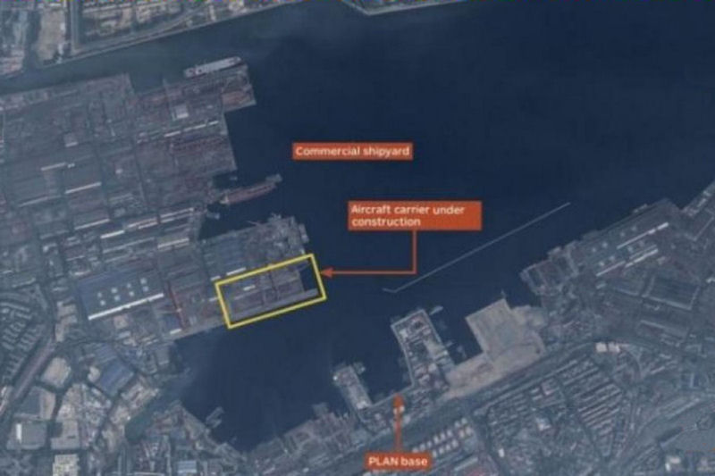
Type 001A Aircraft Carrier: While continuing to exercise their existing carrier, the Liaoning, in 2015 it became clear that the Chinese were building their second carrier, and their first indegenous one, in Dalian. This has been nominally called the Type 001A carrier. In fact, the Chinese themselves have announced the building of this carrier, indicating that it will be similar to the Liaoning having a ski-jump, and in essence be a Chinese designed and built version of the Russian Kuznetsov class, the second of which was the Varyag, which the Chinese purchased from Ukriane and then refurbished to make the Liaoning. The decision to do this is a good one by the Chinese. It tallows them to leverage the experience they are already gaining, experience overall savings logistically and in training, and continue to move their program forward in a conservative manner with minimum risk. This new carrier is likely to improve on the Liaoning in several ways. In the hanger and work spaces below deck, in having all of its wiring and circuitry designed for Chinese sensors and equipment from the outset, and perhaps improve on logistical and deck handling features. We will have to wait and see if they change the propulsion. At the rate that this new carrier is coming together, it is possible that the vessel will launch in early to mid-2017. As of the end of 2015, the yard workers were completing the hanger deck level of the carrier. The flight deck, the bow of the ship, the stern of the ship, and the island are yet to be built. Of course there will also be significant work in the internal spaces wiring and preparing the vessel for launch. Nonetheless, within the next 12-18 months, it appears certain that the Chinese will launch their second full sized, fixed wing aircraft carrier...and their first indegenous one. 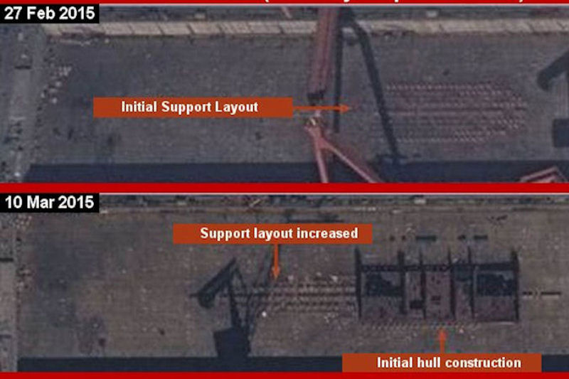 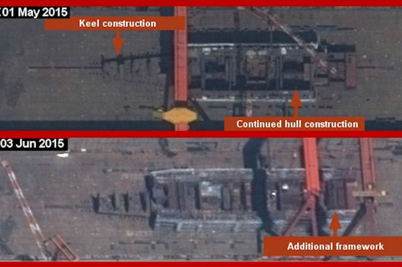 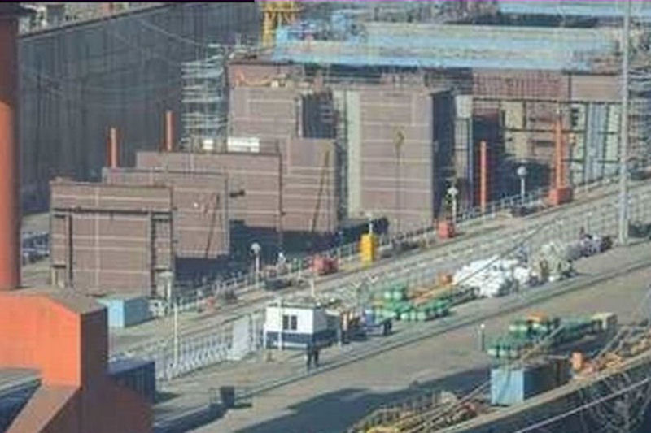 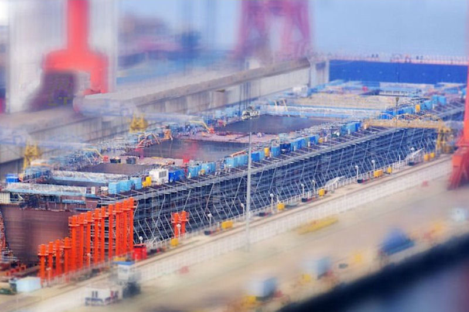 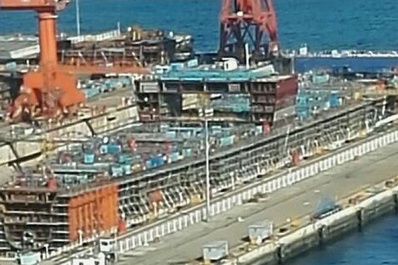 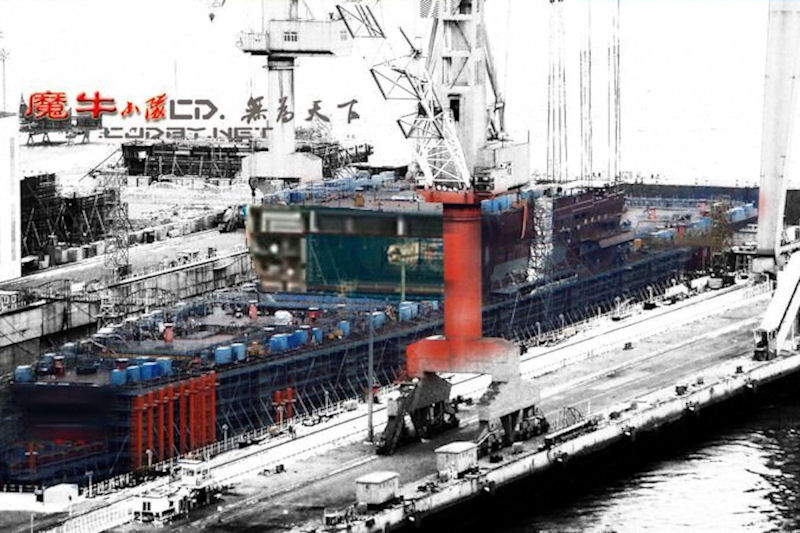 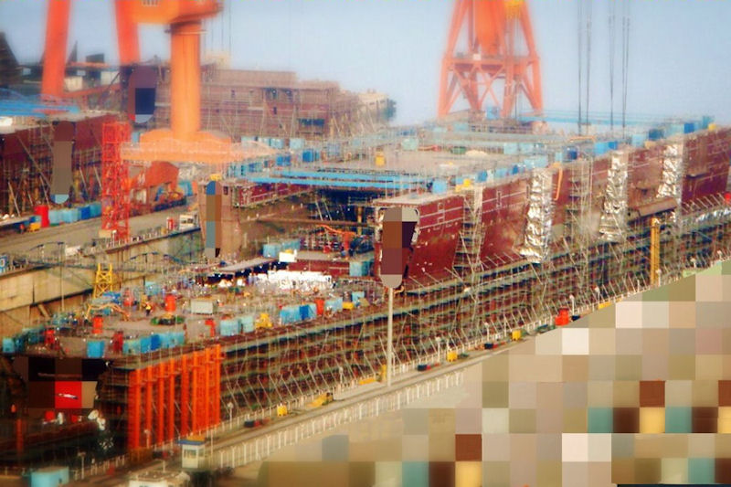 A third carrier, expected to be a conventionally powered CATOBAR carrier (Catapult take off, barrier arrested landing), similar perhaps to the former US Kitty Hawk design, has either already had its first steeel cut, or soon will. So in the next four to five years, a third Chinese carrier will most likely be launched
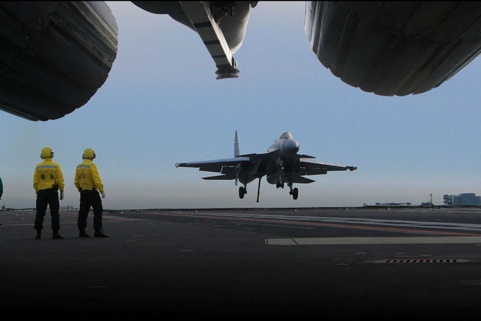
J-15 Flying Shark: The Chinese qualified many pilots with six flying prototypes to begin with, but have been adding production aircraft over the last couple of years to their at-sea training regiment. Fifteen numered aircraft have been seen at one time or another, all of which appear to have rotated onto the carrier. It is probable that there are quite a few more J-15 production aircraft than this, they just have not been seen to date. As many as six airraft have been seen at one time on the carrier to date, although more may have been aboard and in the hanger when those pictures were taken. The Liaoning can carry up to 24 of these arcraft and it is expected in 2016 that the Liaoning will continue to test and qualify with more aircraft as theit testing and qualification schedule allows. Up to twelve aircraft may operate off of the carrier in 2016. 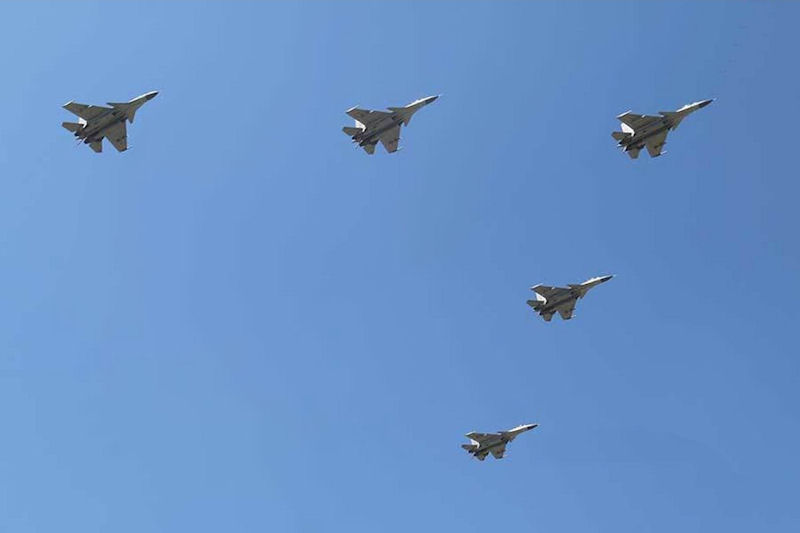 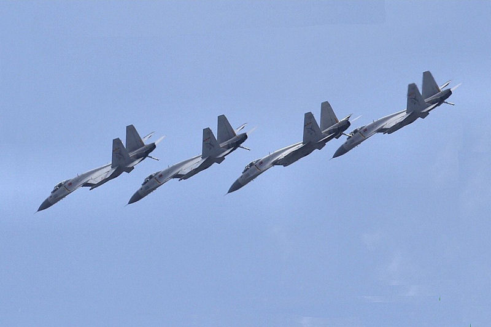 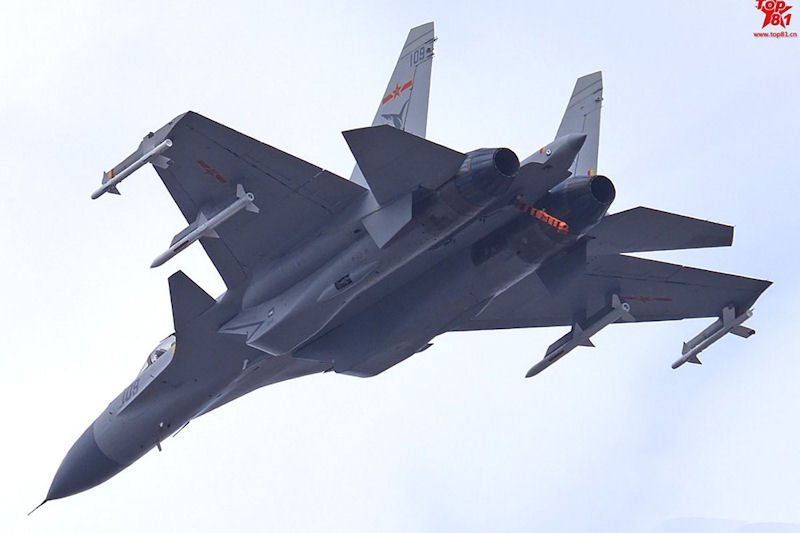 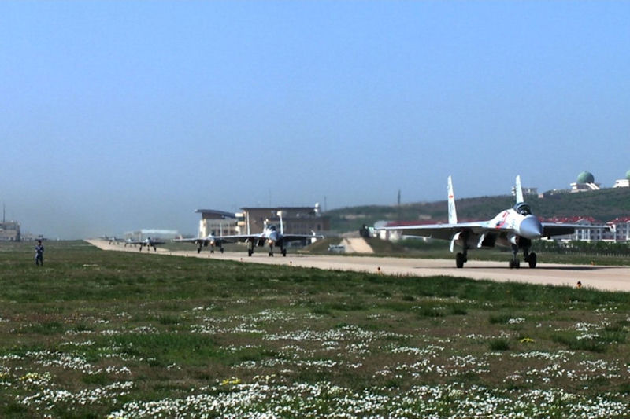 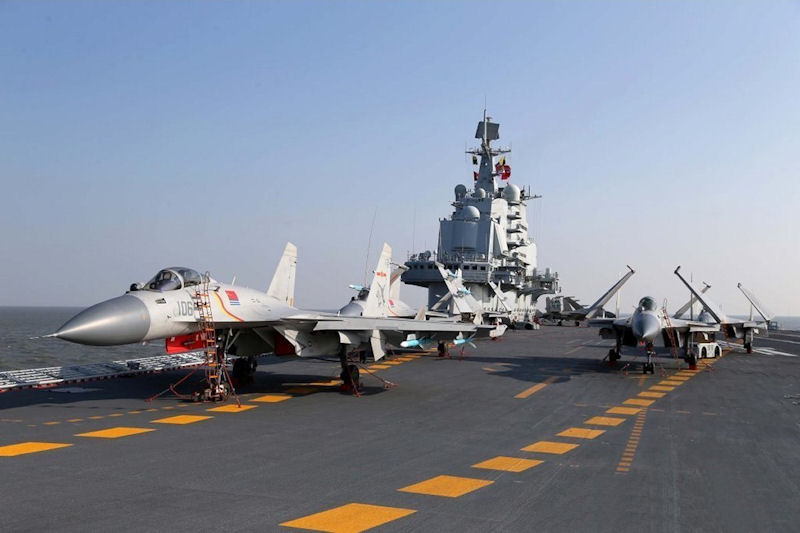 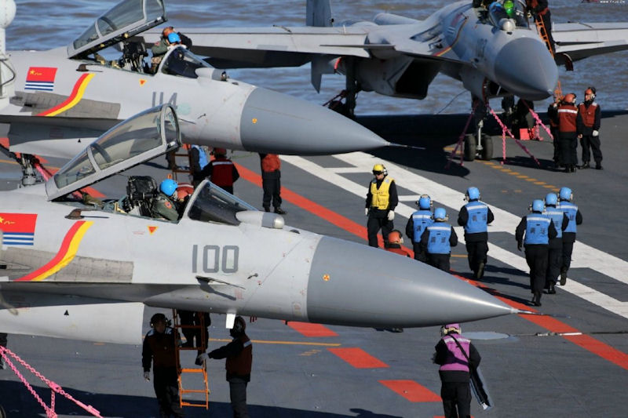 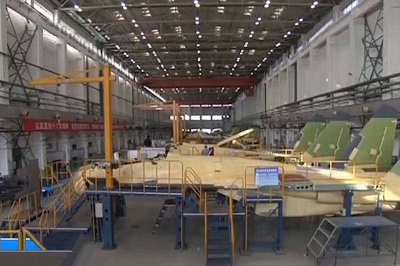 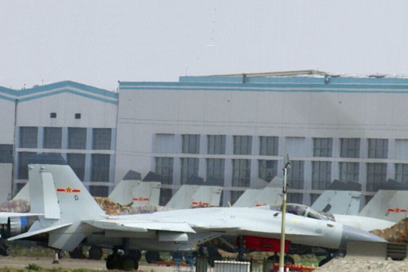 With a second carrier to be launched in the next year or so, the PLAN will soon have the ability to surge two carreirs with up to 48 J-15 naval strike fighters available.
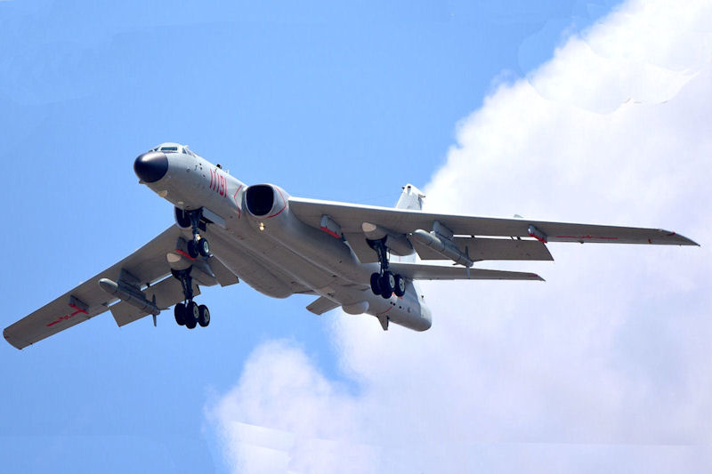
H-6K Bomber: These jet aircraft, although lacking the range or carry weight of a US B-52, or Russian turboprop Tu-95, are nonetheless very strong maritime patrol and strike aircraft for the PLAN. By replacing the internal bomb bay with more fuel tanks, and by adding six pylons to the strengthened wings, the H-6K aircraft are relevant assets for the PLAN. They have good range (2,200 mile combat radius), and each can carry up to six air-launched CJ-10A Cruise Missiles (ALCMs), each of which has a 1,200 lb warhead and a range of 1,000 miles. A wing or regiment of these aircraft will definitely be able to put adversary naval forces and bases at risk in any potential conflict, particularly when protected by either land-based, or carrier-based aircraft, and when accompanied by the new Early Warning and Electronic Warfare aircraft the Chinese are also producing. 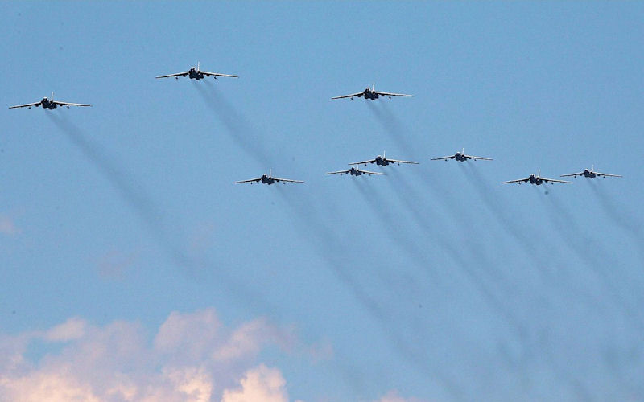 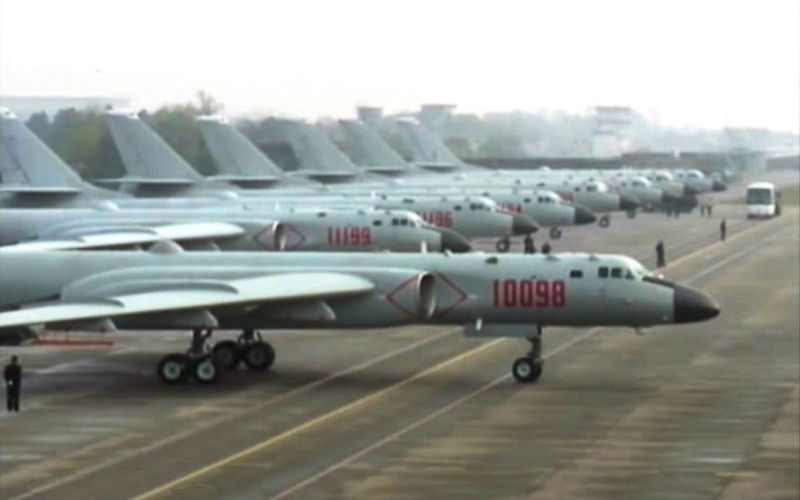 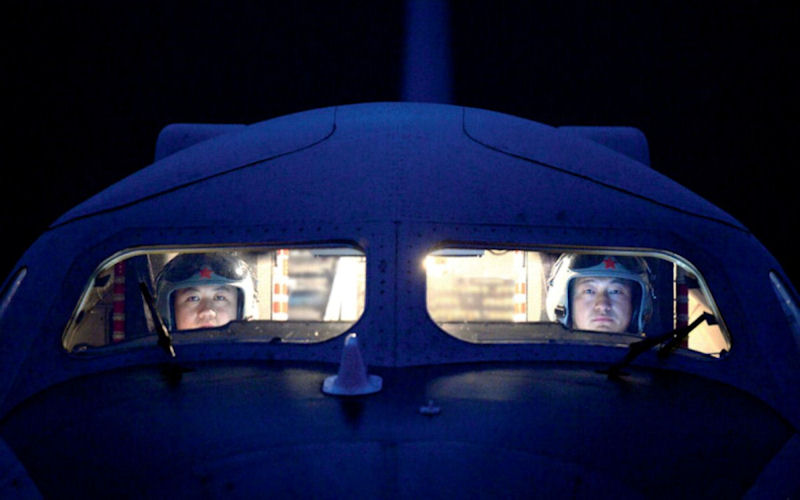 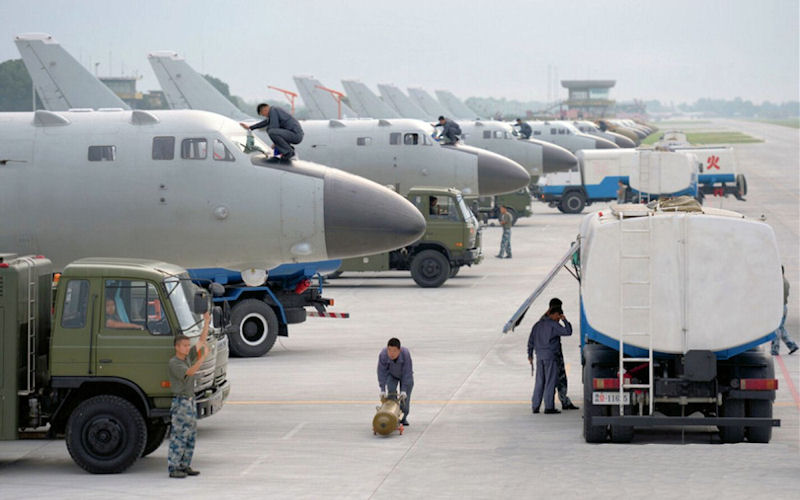 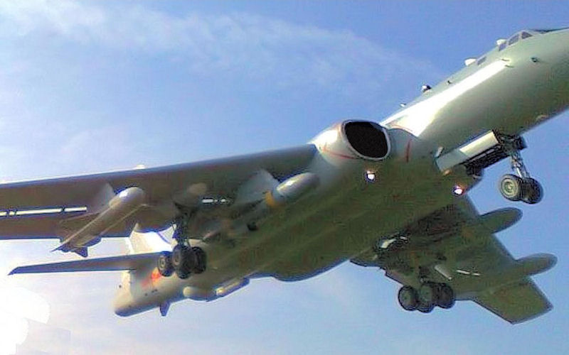 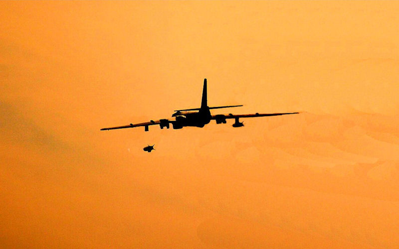 These aircraft continue to be produced, and additional aircaft in 2015 bring the total number to date approaching 30 aircraft, with, as stated, more being built.
Go to 4. Replenishment Vessel Developments of the 2016 PLAN Report RETURN TO MAIN PAGE OF THE 2016 PLAN REPORT
Other links of Interest:
World-Wide Aircraft Carriers
|